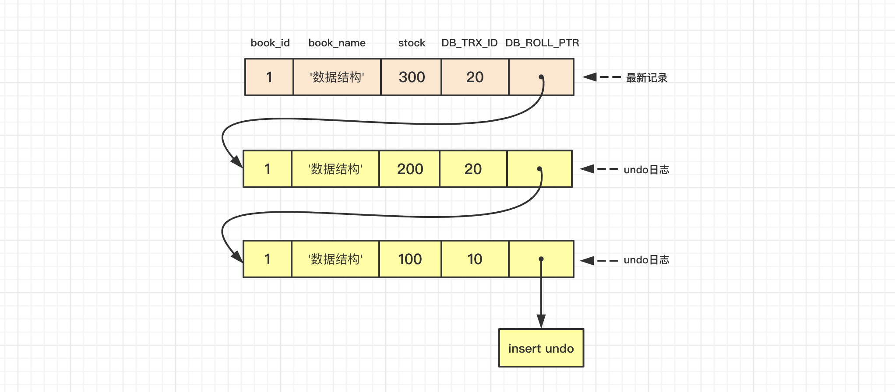
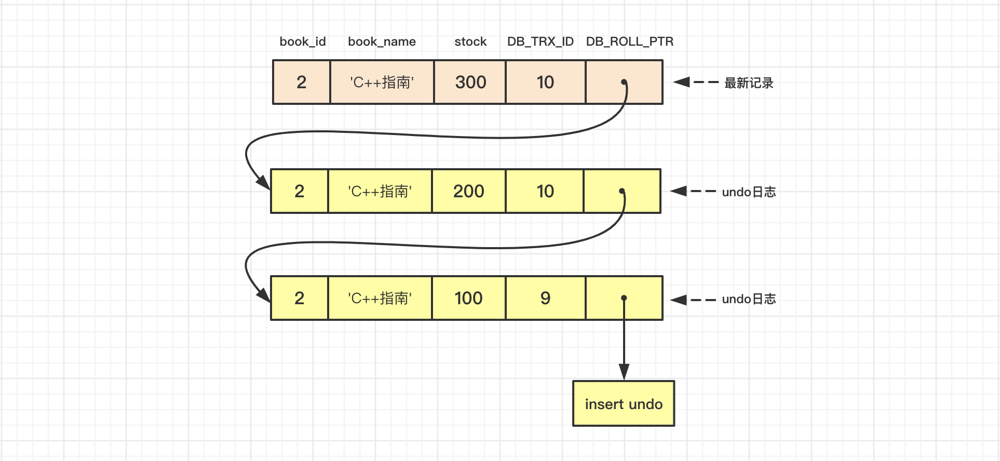
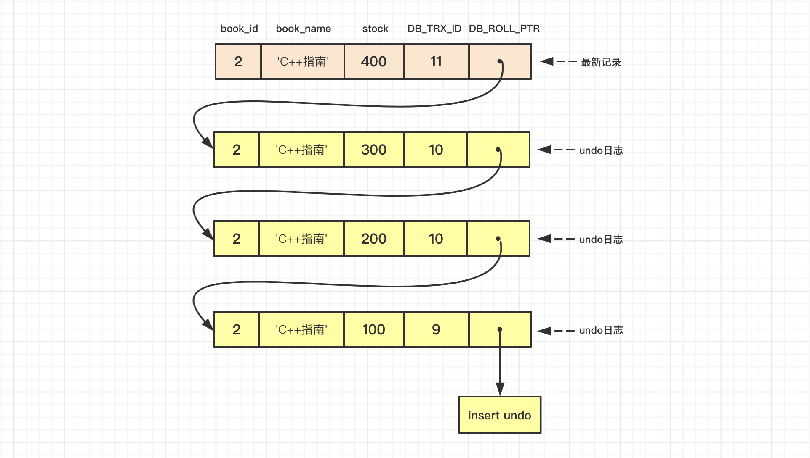

前言
如果数据库中的事务都是串行执行的，这种方式可以保障事务的执行不会出现异常和错误，但带来的问题是串行执行会带来性能瓶颈；而事务并发执行，如果不加以控制则会引发诸多问题，包括死锁、更新丢失等等。这就需要我们在性能和安全之间做出合理的权衡，使用适当的并发控制机制保障并发事务的执行。
并发事务带来的问题
首先我们先来了解一下并发事务会带来哪些问题。并发事务访问相同记录大致可归纳为以下3种情况：
- 读-读：即并发事务相继读取同一记录；
- 写-写：即并发事务相继对同一记录做出修改；
- 写-读或读-写：即两个并发事务对同一记录分别进行读操作和写操作。
读-读
因为读取记录并不会对记录造成任何影响，所以同个事务并发读取同一记录也就不存在任何安全问题，所以允许这种操作。
写-写
如果允许并发事务都读取同一记录，并相继基于旧值对这一记录做出修改，那么就会出现前一个事务所做的修改被后面事务的修改覆盖，即出现提交覆盖的问题。
另外一种情况，并发事务相继对同一记录做出修改，其中一个事务提交之后之后另一个事务发生回滚，这样就会出现已提交的修改因为回滚而丢失的问题，即回滚覆盖问题。
这两种问题都造成丢失更新，其中回滚覆盖称为第一类丢失更新问题，提交覆盖称为第二类丢失更新问题。
写-读或读-写
这种情况较为复杂，也最容易出现问题。
如果一个事务读取了另一个事务尚未提交的修改记录，那么就出现了脏读的问题；
如果我们加以控制使得一个事务只能读取其他已提交事务的修改的数据，那么这个事务在另一事物提交修改前后读取到的数据是不一样的，这就意味着发生了不可重复读；
如果一个事务根据一些条件查询到一些记录，之后另一事物向表中插入了一些记录，原先的事务以相同条件再次查询时发现得到的结果跟第一次查询得到的结果不一致，这就意味着发生了幻读。
事务的隔离级别
对于以上提到的并发事务执行过程中可能出现的问题，其严重性也是不一样的，我们可以按照问题的严重程度排个序：
1 | 丢失更新 > 脏读 > 不可重复读 > 幻读 |
因此如果我们可以容忍一些严重程度较轻的问题，我们就能获取一些性能上的提升。于是便有了事务的四种隔离级别：
- 读未提交（
Read Uncommitted）：允许读取未提交的记录，会发生脏读、不可重复读、幻读； - 读已提交（
Read Committed）：只允许读物已提交的记录，不会发生脏读，但会出现重复读、幻读； - 可重复读（
Repeatable Read）：不会发生脏读和不可重复读的问题，但会发生幻读问题；但MySQL在此隔离级别下利用MVCC或者间隙锁可以禁止幻读问题的发生； - 可串行化（
Serializable）：即事务串行执行，以上各种问题自然也就都不会发生。
值得注意的是以上四种隔离级别都不会出现回滚覆盖的问题，但是提交覆盖的问题对于MySQL来说，在Read Uncommitted、Read Committed以及Repeatable Read这三种隔离级别下都会发生（标准的Repeatable Read隔离级别不允许出现提交覆盖的问题），需要额外加锁来避免此问题。
隔离级别的实现
SQL规范定义了以上四种隔离级别，但是并没有给出如何实现四种隔离级别，因此不同数据库的实现方式和使用方式也并不相同。而SQL隔离级别的标准是依据基于锁的实现方式来制定的，因为有必要先了解一下传统的基于锁的隔离级别是如何实现的。
传统隔离级别的实现
既然说到传统的隔离级别是基于锁实现的，我们先来了解一下锁。
锁
传统的锁有两种：
- 共享锁（
Shared Locks）：简称S锁，事务对一条记录进行读操作时，需要先获取该记录的共享锁。 - 排他锁（
Exclusive Locks）：简称X锁，事务对一条记录进行写操作时，需要先获取该记录的排他锁。
需要注意的是，加了共享锁的记录，其他事务也可以获得该记录的共享锁，但是无法获取该记录的排他锁，即S锁和S锁是兼容的，S锁和X锁是不兼容的；而加了排他锁的记录，其他事务既无法获取该记录的共享锁也无法获取排他锁，即X锁和X锁也是不兼容的。
另外，刚刚说到事务对一条记录进行读操作时，需要先获取该记录的S锁，但有时事务在读取记录时需要阻止其他事务访问该记录，这时就需要获取该记录的X锁。以MySQL为例，有以下两种锁定读的方式：
- 读取时对记录加
S锁：
1 | SELECT ... LOCK IN SHARE MODE; |
如果事务执行了该语句，则会在读取的记录上加S锁，这样就允许其他事务也能获取到该记录的S锁；而如果其他事务需要获取该记录的X锁，那么就需要等待当前事务提交后释放掉S锁。
- 读取时对记录加
X锁：
1 | SELECT ... FOR UPDATE; |
如果事务执行了该语句，则会在读取的记录上加X锁，这样其他事务想要说去该记录的S锁或X锁，那么需要等待当前事务提交后释放掉X锁。
对于锁的粒度而言，锁又可以分为两种：
- 行锁：只锁住某一行记录，其他行的记录不受影响。
- 表锁：锁住整个表，所有对于该表的操作都会受影响。
基于锁实现隔离级别
在基于锁的实现方式下，四种隔离级别的区别就在于加锁方式的区别：
- 读未提交：读操作不加锁，读读，读写，写读并行；写操作加
X锁且直到事务提交后才释放。 - 读已提交：读操作加
S锁，写操作加X锁且直到事务提交后才释放；读操作不会阻塞其他事务读或写，写操作会阻塞其他事务写和读，因此可以防止脏读问题。 - 可重复读：读操作加
S锁且直到事务提交后才释放，写操作加X锁且直到事务提交后才释放；读操作不会阻塞其他事务读但会阻塞其他事务写，写操作会阻塞其他事务读和写，因此可以防止脏读、不可重复读。 - 串行化：读操作和写操作都加
X锁且直到事务提交后才释放，粒度为表锁，也就是严格串行。
这里面有一些细节值得注意：
- 如果锁获取之后直到事务提交后才释放，这种锁称为长锁；如果锁在操作完成之后就被释放，这种锁称为短锁。例如，在读已提交隔离级别下，读操作所加
S锁为短锁，写操作所加X锁为长锁。 - 对于可重复读和串行化隔离级别，读操作所加
S锁和写操作所加X锁均为长锁，即事务获取锁之后直到事务提交后才能释放，这种把获取锁和释放锁分为两个不同的阶段的协议称为两阶段锁协议（2-phase locking）。两阶段锁协议规定在加锁阶段，一个事务可以获得锁但是不能释放锁；而在解锁阶段事务只可以释放锁，并不能获得新的锁。两阶段锁协议能够保证事务串行化执行，解决事务并发问题，但也会导致死锁发生的概率大大提升。
MySQL隔离级别的实现
不同数据库对于SQL标准中规定的隔离级别支持是不一样的，数据库引擎实现隔离级别的方式虽然都在尽可能地贴近标准的隔离级别规范，但和标准的预期还是有些不一样的地方。
MySQL（InnoDB）支持的4种隔离级别，与标准的各级隔离级别允许出现的问题有些出入，比如MySQL在可重复读隔离级别下可以防止幻读的问题出现，但也会出现提交覆盖的问题。
相对于传统隔离级别基于锁的实现方式，MySQL 是通过MVCC（多版本并发控制）来实现读-写并发控制，又是通过两阶段锁来实现写-写并发控制的。MVCC是一种无锁方案，用以解决事务读-写并发的问题，能够极大提升读-写并发操作的性能。
MVCC的实现原理
为了方便描述，首先我们创建一个表book，就三个字段，分别是主键book_id, 名称book_name, 库存stock。然后向表中插入一些数据：
1 | INSERT INTO book VALUES(1, '数据结构', 100); |
版本链
对于使用InnoDB存储引擎的表，其聚簇索引记录中包含了两个重要的隐藏列：
- 事务ID（
DB_TRX_ID）：每当事务对聚簇索引中的记录进行修改时，都会把当前事务的事务id记录到DB_TRX_ID中。 - 回滚指针（
DB_ROLL_PTR）：每当事务对聚簇索引中的记录进行修改时，都会把该记录的旧版本记录到undo日志中，通过DB_ROLL_PTR这个指针可以用来获取该记录旧版本的信息。
如果在一个事务中多次对记录进行修改，则每次修改都会生成undo日志，并且这些undo日志通过DB_ROLL_PTR指针串联成一个版本链，版本链的头结点是该记录最新的值，尾结点是事务开始时的初始值。
例如，我们在表book中做以下修改：
1 | BEGIN; |
那么id=1的记录此时的版本链就如下图所示：

ReadView
对于使用Read Uncommitted隔离级别的事务来说，只需要读取版本链上最新版本的记录即可；对于使用Serializable隔离级别的事务来说，InnoDB使用加锁的方式来访问记录。而Read Committed和Repeatable Read隔离级别来说，都需要读取已经提交的事务所修改的记录，也就是说如果版本链中某个版本的修改没有提交，那么该版本的记录时不能被读取的。所以需要确定在Read Committed和Repeatable Read隔离级别下，版本链中哪个版本是能被当前事务读取的。于是ReadView的概念被提出以解决这个问题。
ReadView相当于某个时刻表记录的一个快照，在这个快照中我们能获取到与当前记录相关的事务中，哪些事务是已提交的稳定事务，哪些是正在活跃的事务，哪些是生成快照之后才开启的事务。由此我们就能根据可见性比较算法判断出版本链中能被读取的最新版本记录。
可见性比较算法是基于事务ID的比较算法。首先我们需要知道的一个事实是：事务id是递增分配的。从ReadView中我们能获取到生成快照时刻系统中活跃的事务中最小和最大的事务id（最大的事务id实际上是系统中将要分配给下一个事务的id值），这样我们就得到了一个活跃事务id的范围，我们可称之为ACTIVE_TRX_ID_RANGE。那么小于这个范围的事务id对应的事务都是已提交的稳定事务，大于这个范围的事务都是在快照生成之后才开启的事务，而在ACTIVE_TRX_ID_RANGE范围内的事务中除了正在活跃的事务，也都是已提交的稳定事务。
有了以上信息之后，我们顺着版本链从头结点开始查找最新的可被读取的版本记录：
1、首先判断版本记录的DB_TRX_ID字段与生成ReadView的事务对应的事务ID是否相等。如果相等，那就说明该版本的记录是在当前事务中生成的，自然也就能够被当前事务读取；否则进行第2步。
2、如果版本记录的DB_TRX_ID字段小于范围ACTIVE_TRX_ID_RANGE，表明该版本记录是已提交事务修改的记录，即对当前事务可见；否则进行下一步。
3、如果版本记录的DB_TRX_ID字段位于范围ACTIVE_TRX_ID_RANGE内，如果该事务ID对应的不是活跃事务，表明该版本记录是已提交事务修改的记录，即对当前事务可见；如果该事务ID对应的是活跃事务，那么对当前事务不可见，则读取版本链中下一个版本记录，重复以上步骤，直到找到对当前事务可见的版本。
如果某个版本记录经过以上步骤判断确定其对当前事务可见，则查询结果返回此版本记录；否则读取下一个版本记录继续按照上述步骤进行判断，直到版本链的尾结点。如果遍历完版本链没有找到对当前事务可见的版本，则查询结果为空。
在MySQL中，Read Committed和Repeatable Read隔离级别下的区别就是它们生成ReadView的时机不同。
MVCC实现不同隔离级别
之前说到ReadView的机制只在Read Committed和Repeatable Read隔离级别下生效，所以只有这两种隔离级别才有MVCC。
在Read Committed隔离级别下，每次读取数据时都会生成ReadView；而在Repeatable Read隔离级别下只会在事务首次读取数据时生成ReadView，之后的读操作都会沿用此ReadView。
下面我们通过例子来看看Read Committed和Repeatable Read隔离级别下MVCC的不同表现。我们继续以表book为例进行演示。
Read Committed隔离级别分析
假设在Read Committed隔离级别下，有如下事务在执行，事务id为10：
1 | BEGIN; // 开启Transaction 10 |
此时该事务尚未提交，id为2的记录版本链如下图所示：

然后我们开启一个事务对id为2的记录进行查询：
1 | BEGIN; |
当执行SELECT语句时会生成一个ReadView，该ReadView中的ACTIVE_TRX_ID_RANGE为[10, 11)，当前事务IDcreator_trx_id为0（因为事务中当执行写操作时才会分配一个单独的事务id，否则事务id为0）。按照我们之前所述ReadView的工作原理，我们查询到的版本记录为
1 | +----------+-----------+-------+ |
然后我们将事务id为10的事务提交：
1 | BEGIN; // 开启Transaction 10 |
同时开启执行另一事务id为11的事务，但不提交：1
2
3BEGIN; // 开启Transaction 11
UPDATE book SET stock = 400 WHERE id = 2;
此时id为2的记录版本链如下图所示：

然后我们回到刚才的查询事务中再次查询id为2的记录：1
2
3
4
5BEGIN;
SELECT * FROM book WHERE id = 2; // 此时Transaction 10 未提交
SELECT * FROM book WHERE id = 2; // 此时Transaction 10 已提交
当第二次执行SELECT语句时会再次生成一个ReadView，该ReadView中的ACTIVE_TRX_ID_RANGE为[11, 12)，当前事务IDcreator_trx_id依然为0。按照ReadView的工作原理进行分析，我们查询到的版本记录为1
2
3
4
5+----------+-----------+-------+
| book_id | book_name | stock |
+----------+-----------+-------+
| 2 | C++指南 | 300 |
+----------+-----------+-------+
从上述分析可以发现，因为每次执行查询语句都会生成新的ReadView，所以在Read Committed隔离级别下的事务读取到的是查询时刻表中已提交事务修改之后的数据。
Repeatable Read隔离级别分析
我们在Repeatable Read隔离级别下重复上面的事务操作：
1 | BEGIN; // 开启Transaction 20 |
此时该事务尚未提交，然后我们开启一个事务对id为2的记录进行查询：
1 | BEGIN; |
当事务第一次执行SELECT语句时会生成一个ReadView，该ReadView中的ACTIVE_TRX_ID_RANGE为[10, 11)，当前事务IDcreator_trx_id为0。根据ReadView的工作原理，我们查询到的版本记录为
1 | +----------+-----------+-------+ |
然后我们将事务id为20的事务提交：
1 | BEGIN; // 开启Transaction 20 |
同时开启执行另一事务id为21的事务，但不提交：1
2
3BEGIN; // 开启Transaction 21
UPDATE book SET stock = 400 WHERE id = 2;
然后我们回到刚才的查询事务中再次查询id为2的记录：1
2
3
4
5BEGIN;
SELECT * FROM book WHERE id = 2; // 此时Transaction 10 未提交
SELECT * FROM book WHERE id = 2; // 此时Transaction 10 已提交
当第二次执行SELECT语句时不会生成新的ReadView，依然会使用第一次查询时生成ReadView。因此我们查询到的版本记录跟第一次查询到的结果是一样的：1
2
3
4
5+----------+-----------+-------+
| book_id | book_name | stock |
+----------+-----------+-------+
| 2 | C++指南 | 100 |
+----------+-----------+-------+
从上述分析可以发现，因为在Repeatable Read隔离级别下的事务只会在第一次执行查询时生成ReadView，该事务中后续的查询操作都会沿用这个ReadView，因此此隔离级别下一个事务中多次执行同样的查询，其结果都是一样的，这样就实现了可重复读。
快照读和当前读
快照读
在Read Committed和Repeatable Read隔离级别下，普通的SELECT查询都是读取MVCC版本链中的一个版本，相当于读取一个快照，因此称为快照读。这种读取方式不会加锁，因此读操作时非阻塞的，因此也叫非阻塞读。
在标准的Repeatable Read隔离级别下读操作会加S锁，直到事务结束，因此可以阻止其他事务的写操作；但在MySQL的Repeatable Read隔离级别下读操作没有加锁，不会阻止其他事务对相同记录的写操作，因此在后续进行写操作时就有可能写入基于版本链中的旧数据计算得到的结果，这就导致了提交覆盖的问题。想要避免此问题，就需要另外加锁来实现。
当前读
之前提到MySQL有两种锁定读的方式：
1 | SELECT ... LOCK IN SHARE MODE; // 读取时对记录加S锁，直到事务结束 |
这种读取方式读取的是记录的当前最新版本，称为当前读。另外对于INSERT、DELETE、UPDATE操作，也是需要先读取记录，获取记录的X锁，这个过程也是一个当前读。由于需要对记录进行加锁，会阻塞其他事务的写操作，因此也叫加锁读或阻塞读。
当前读不仅会对当前记录加行记录锁，还会对查询范围空间的数据加间隙锁（GAP LOCK），因此可以阻止幻读问题的出现。
总结
本文介绍了事务的多种并发问题，以及用以避免不同程度问题的隔离级别，并较为详细描述了传统隔离级别的实现方式以及MySQL隔离级别的实现方式。但数据库的并发机制较为复杂，本文也只是做了大致的描述和介绍，很多细节还需要读者自己查询相关资料进行更细致的了解。